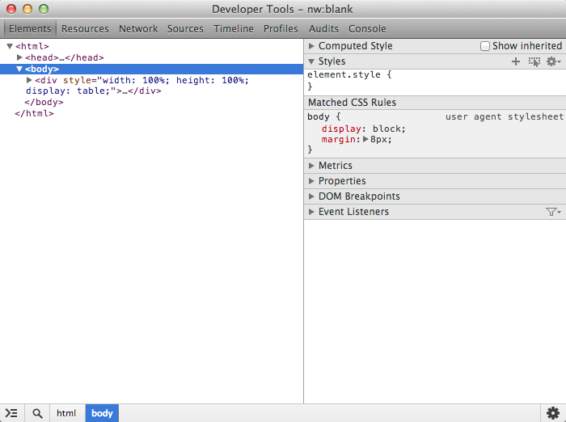
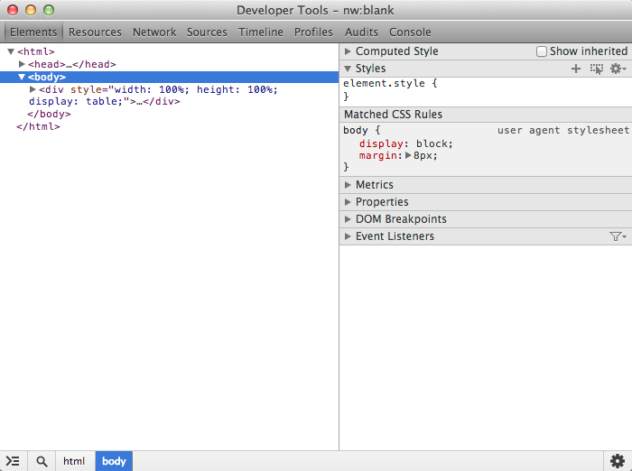
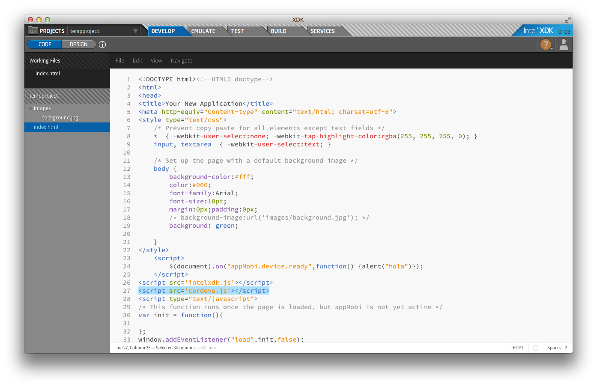

WebApp to DesktopApp with Node-Webkit
Dale Schouten
twitter: @OldGeeksGuide
October 2013
Me
var printf = alert;
printf("Hello World");
var printf = function(s) {console.log(s); alert(s);};
printf("Hello World");
Science
Requirements
- Easy to use - Simple GUI
- Easy to add questions - Edit txt file
- No Duplicates - Automatic
- Cross Platform - Windows and Mac
- Packaged - Simple to run/install
- Portable - change computers
HTML
- Easy to use
- Easy to add questions
- No Duplicates
- Cross Platform
- Packaged
- Portable
Desktop
- Easy to use
- Easy to add questions
- No Duplicates
- Cross Platform
- Packaged
- Portable
Intersection
Node
- Server
- (A)synchronicity
- Access
- Modules
- fs, os, undescore, . . .
Webkit
- Webkit
- Blink
- Chromium
- Libraries
- jQuery, d3, three.js, . . .
- Frameworks
- Bootstrap, Topcoat, . . .
Node-Webkit
Package
package.json
{
"name": "My App",
"main": "index.html",
"window": {
"toolbar": false,
"resizable": true,
"fullscreen": false,
"width": 800,
"height": 600
},
"dependencies": {
"underscore": "~1.4.4",
},
"js-flags": "--harmony-collections"
}
npm
npm install- node_modules/
- zip it
Platforms
copy /b nw.exe+app.nw > foo.exe
cp app.nw nw/Contents/Resources/
cat nw app.nw > foo
Debug
 

Warts
- Windows/Linux require extra files
- Not v1.0, some stuff still broken
- child_process
- Name conflicts
- crypto
- Multiple Contexts can be confusing
- Lack of Keyboard shortcuts
Other
- CEF - Chromium Embedded Framework
- Brackets Shell
- AppJS
Do?
File
fs = require('fs');
// Read a file:
fileText = fs.readFileSync('foo.txt').toString();
// Write a file:
fs.writeFileSync('bar.txt', fileText);
// Explore a directory:
fs.readdirSync('.')
Choose
// Create non-displayed input element
<input onchange="openBrowsedFile(event)" id="chooser" type="file"
style="display:none"/>
. . .
// Dispatch Click Event
var click = new CustomEvent('click');
var elem = document.getElementById('chooser');
elem.dispatchEvent(click);
. . .
// Event contains chosen file name
function openBrowsedFile(event) {
var filename = event.target.value;
. . .
}
CPU
os = require('os');
// Number of CPU's
os.cpus().length
// Total CPU System Time
_.chain(os.cpus()).pluck('times').pluck('sys').reduce(function(s,t){
return s+t;
}).value();
// Free memory
os.freemem();
Menu
var gui = require('nw.gui');
var win = gui.Window.get();
var rootMenu = new gui.Menu({
type: 'menubar'});
var myMenu = new gui.Menu();
myMenu.append(new gui.MenuItem({
type: 'normal',
label: 'Debug',
click: function (){
win.showDevTools();
} }));
rootMenu.append(new gui.MenuItem({
label: 'NW-Reveal',
submenu: myMenu
}));
rootMenu.append(new gui.MenuItem({
label: 'NW-Reveal',
submenu: myMenu
}));
Tray
var tray = new gui.Tray({
icon: 'icon.png'
});
var menu = new gui.Menu();
menu.append(new gui.MenuItem({
type: 'checkbox',
label: 'Always-on-top',
click: function () {...}
}));
tray.menu = menu;
Kiosk
// In package.json
"window": {
"kiosk": true
}
// Or
gui.Window.get().enterKioskMode();
// Later
gui.Window.get().leaveKioskMode();
Shell
// Open Link in browser
gui.Shell.openExternal('https://intel.com');
// Open a file with default application
gui.Shell.openItem('foo.ext');
// Open a file in finder/file explorer.
gui.Shell.showItemInFolder('/path/to/bar');
Native
$ npm install -g nw-gyp
binding.gyp:
{
"targets": [
{
"target_name": "foo",
"sources": [ "foo.cc" ]
}
]
}
$ nw-gyp configure --target=0.7.5 # nw version
$ nw-gyp build
Snapshot
(Experimental)
$ nwsnapshot --extra_code foo.js foo.bin
In package.json:
. . .
"snapshot": "foo.bin"
. . .
Play
var gui = require('nw.gui');
var win = gui.Window.get();
win.hide();
win.show();
win.maximize();
win.minimize();
window.open();
window.moveBy(10,30);
window.resizeTo(800,600);
Also
- Persist
- Frameless
- Clipboard
- Icons
- WebGL
New
Sum
- Easy
- Flexible
- Powerful
- Leverage
Legal
This presentation is for informational purposes only. INTEL MAKES NO WARRANTIES, EXPRESS OR IMPLIED, IN THIS SUMMARY.
[Intel, the Intel logo, Intel XDK and Intel XDK NEW] are trademarks of Intel Corporation in the U.S. and other countries.
*Other names and brands may be claimed as the property of others.
Microsoft, Windows, and the Windows logo are trademarks, or registered trademarks of Microsoft Corporation in the United States and/or other countries.
INFORMATION IN THIS DOCUMENT IS PROVIDED IN CONNECTION WITH INTEL® PRODUCTS. NO LICENSE, EXPRESS OR IMPLIED, BY ESTOPPEL OR OTHERWISE, TO ANY INTELLECTUAL PROPERTY RIGHTS IS GRANTED BY THIS DOCUMENT. EXCEPT AS PROVIDED IN INTEL'S TERMS AND CONDITIONS OF SALE FOR SUCH PRODUCTS, INTEL ASSUMES NO LIABILITY WHATSOEVER, AND INTEL DISCLAIMS ANY EXPRESS OR IMPLIED WARRANTY, RELATING TO SALE AND/OR USE OF INTEL PRODUCTS INCLUDING LIABILITY OR WARRANTIES RELATING TO FITNESS FOR A PARTICULAR PURPOSE, MERCHANTABILITY, OR INFRINGEMENT OF ANY PATENT, COPYRIGHT OR OTHER INTELLECTUAL PROPERTY RIGHT. Intel products are not intended for use in medical, life saving, life sustaining, critical control or safety systems, or in nuclear facility applications.Intel may make changes to specifications and product descriptions at any time, without notice. Designers must not rely on the absence or characteristics of any features or instructions marked "reserved" or "undefined." Intel reserves these for future definition and shall have no responsibility whatsoever for conflicts or incompatibilities arising from future changes to them. The information here is subject to change without notice. Do not finalize a design with this information. All products, platforms, dates, and figures specified are preliminary based on current expectations, and are subject to change without notice. Copyright © 2013, Intel Corporation. All rights reserved.